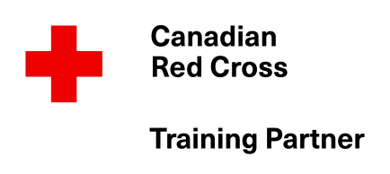

First aid courses for Richmond, BC
Live or work in Richmond? Take Red Cross Emergency First Aid (OFA 1 / Basic) or Standard First Aid (OFA 2 / Intermediate) at our Surrey classroom, 112-8232 120 St.

Canadian Red Cross Training Partner. Our courses are accepted by WorkSafeBC as Basic (OFA 1) and Intermediate (OFA 2) First Aid.
First aid training for people in Richmond
We welcome students from City Centre, Steveston, Hamilton and Broadmoor and the rest of Richmond. Richmond employers include airport and logistics businesses, restaurants, hotels, retail and food production. WorkSafeBC decides which certificate level your workplace needs, so check with your employer before you book.
Getting to our Surrey classroom
Classes are held at 112-8232 120 St, Surrey, Monday to Friday, 9 am to 8 pm. Get directions from Richmond or call 604-825-8882.
Courses and prices
OFA Level 1 (Basic First Aid) is one day for $75. OFA Level 2 (Intermediate First Aid) is two days for $130. Not sure which one? Read OFA 1 vs OFA 2.
Questions
Where can I take a first aid course near Richmond?
Our Red Cross classroom is at 112-8232 120 St, Surrey, BC. People from Richmond are welcome to register for OFA 1 (Basic) and OFA 2 (Intermediate).
How much do first aid courses cost if I live in Richmond?
OFA 1 (Basic) is $75 and OFA 2 (Intermediate) is $130.
Also serving: Delta, Vancouver, Burnaby and the full list of areas we serve.
Register for your course
Click a course to open the registration form, or call 604-825-8882.